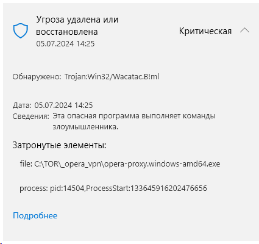
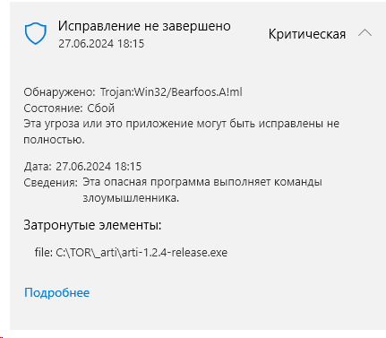

в винде при “облачной” заШИТе на якобы вирусы/трояны реагирует на всё.
tor.exe arti.exe opera-proxy.exe etc
по тестам автора опера-прокси обычный (не облачный) не срабатывал
{kind=link}


после жалоб через какое то время убирают конкретные false-positive но шанс что опять/снова сработает
НА СВОЙ СТРАХ И РИСК
Спойлер
{kind=link}
А вы попробуйте поставить nod32, он отключит дефендер и проверите, реально ли это или нет.
Дефендер это же халявный так называемый антивирус и верить что на халяву всё будет хорошо, подумайте сами, какой смысл делать халявный антивирус, в чём прикол
Последние версии nod32 так же работают онлайн, мониторят все сайты, вот и проверите.
Себе я правда поставил старую версию, она работает оф лайн, не люблю когда мониторят
я проверял на тот момент на virustotale
например на opera-proxy до сих пор ругаются какие то анти"вирусы" включая какой то Google 
нет, nod32
Я им пользуюсь со времён ХР, производитель словакия, многие как я знаю ставят каспера, со словами надо поддерживать своего производителя, но сравнить можно например жигули и шкоду, почему то жигу эти многие поддерживать не хотят )
арти (тор) я вообще сам собирал из исходников (rust на github)
причем
- собираю с своими настройками/конфигами/етк и врядли чужие сборки по HASH совпадут
- мои сборки качают всего пару человек чтобы где то засветится
опять же скорей всего при включенной галке (там ниже) “загружать подозрительное в облако” какой то недо-A.I. детектит странное что в АРТИ как и в ТОРе таки есть (rpc/relay-server/etc)
Вы поймите, нод32 это европейский антивирус, рассчитан на европу и лицензия у них штатовская.
Есть зонтик, он для штатов рассчитан, для их вирусов.
Дефендер как было известно причём очень давно это полная шляпа, хоть некоторые со мной не будут согласны, но эти некоторые не знают то, что знаю я.
Поэтому просто проверьте, прислушайтесь к моему совету, поставьте последнюю весию нод32 для пробы, она вырубит дефендер, если вы хотите реально понять, правду пишет этот ваш дефендер или нет, ключ найдёте там на 30 дней и хватит для проверки
У меня он помню стал удалять прогу торрент, я стал понижать версии и остановился на версии которые он перестал удалять и в этой старой версии нет ни рекламы и проц она перестала грузить, я подумал почему я раньше не поставил эту старую версию, куда нод смотрел раньше ))
На некоторые проги он тоже может ругаться, но тут нужно быть твёрдо уверенным что там всё нормально, это просто ложная тревога. Одним словом надо понимать как он работает. Список сайтов которые он не даёт открывать, так и пишет красным, сайт такой то нод32 вас защитил, я включаю Shadow Defender, отключаю нод, захожу на этот сайт, смотрю действительно лучше туда не заходить )) И так проверяю частенько.
Shadow Defender это прога для экспериментов, она делает снимок и после перезагрузки всё возвращается на место, как будто ничего и не было, только дату трогать нельзя, а так можно делать всё что хочешь, хоть системные файлы удаляй, пофиг. Не уверен в проге которую скачал, включил шадов дефендер, установил, поюзал, всё проверил, если лажа, просто перезагрузился и всё, удалять ничего не надо.
Через неё я даже расширение в браузере проверяю, бывает обновится и не работает, а так проверил, всё нормально и потом уже смело обновляю